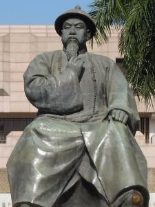
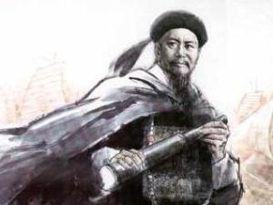

林则徐（1785年8月30日-1850年11月22日），字元抚，又字少穆、石麟，晚号俟村老人、瓶泉居士等，福建省侯官（今福州市区）人，清代政治家、思想家、诗人。官至一品，曾任湖广总督、陕甘总督和云贵总督，两次受命钦差大臣，因为主张严禁鸦片及抵抗西方列强的侵略，有“民族英雄”之称誉。
林则徐一生力抗西方入侵，但对于西方的文化、科技和贸易则持开放态度，主张学其优而用之，据文献记载，他至少略通英、葡两种外语。
林则徐的父亲林宾日原名林天翰，字孟养，号旸谷，嘉庆侯官岁贡生，是当地的教书先生，于邻居罗氏的地方开设书塾。而林则徐的母亲陈帙，为闽县岁贡生陈圣灵之第五女。林宾日、陈帙夫妇一共生育十一名子女：长子林鸣鹤（早夭）、次子林则徐、三子林霈霖及八名女儿。
林则徐，字元抚，又字少穆、石麟， 1785年生，清朝中期户籍福建侯官县， 祖出莆田九牧林。他为其父林宾日所撰的《诰封通奉大夫江宁布政使显考旸谷府君行状》载：“府君讳宾日，字孟养，号旸谷，系出九牧林氏，近代民族英雄林则徐，祖出莆田九牧林。
虽然林宾日为私塾教师，中了秀才后又可领取公粮。但家里人口众多，僧多粥少，甚至三餐都无以为继。林母陈帙瞒住丈夫，偷偷以女红这项手艺帮补家计，她也将此剪纸手艺传于女儿，才能维持家庭生活。家计虽不用代劳，但林则徐每天到书塾之前，都先会为母亲姊妹的工艺品拿到店铺寄卖，放学后，则再到店铺收钱交回母亲。贫苦的童年，使他日后升至高官时都保持清俭的习惯。
林则徐童年家境寒苦，但他得到开明的父亲教导，还有一个温馨的家庭，童年是非常快乐的。邻居常常听到林家吃饭时的欢笑声，探看之下，不过是十多个人津津有味吃着豆腐。后来林家以此事来教诲子孙知足常乐的道理。
林则徐于乾隆五十年七月二十六日（1785年8月30日）出生在福建侯官鼓东街（今福州市鼓楼区）一个下层封建知识分子的家庭里。父亲林宾日，以教读、讲学为生。仅靠父亲教私塾的微薄收入无法维持生活，于是，母亲用手工劳动来分担家庭的困窘。
在科举时代，林则徐的父母指望自己的儿子能在仕宦之途发达上升。林则徐生性聪颖，在4岁时便由父亲“怀之入塾，抱之膝上”，口授四书五经。在父亲的精心培育下，较早地读了儒家经传。嘉庆三年（1798年），他14岁中秀才后就到福建著名的鳌峰书院读书，受教于具有实学的郑光策和陈寿祺。在父亲和亲友的影响下，开始注意经世致用之学。
嘉庆九年（1804年），20岁中举人。父亲的谆谆教导使林则徐的学业取得了惊人的成就。但此后由于家庭日难，外出当塾师。在十一年（1806年）秋，应房永清之聘到厦门任海防同知书记。这里的鸦片烟毒引起他的注意。同年，受新任福建巡抚张师诚的赏识招入幕府。他在张幕中获知了不少清朝的掌故和兵、刑、礼、乐等知识以及官场经验，为他日后的“入仕”准备了些必要条件。
嘉庆九年（1804年），林则徐参加乡试，中第二十九名举人。就在揭晓成绩排名的那一天，他正式迎娶郑淑卿为妻，自此林则徐在郑淑卿在世时都没有纳过妾侍，终其一生情深不渝（但据林则徐长房后人林鸿汉表示，郑淑卿逝世后林则徐曾续弦再娶）。林则徐逝世后，同治至光绪年间，英国的杜莎夫人蜡像馆特地为林则徐郑淑卿夫妇制作蜡像，成为少数可长期展出的名人蜡像，以表敬意。
年底，新婚燕尔的林则徐离开家人前往京师参加会试但名落孙山。回乡后就在福州北库巷开设“补梅书屋”开班授徒，等待下一次的会试。
嘉庆十一年（1806年），林则徐担任厦门海防同知书记，专责处理商贩洋船来往、米粮兵饷的文书记录。那时厦门的走私鸦片问题严重，历任厦门海防同知皆是贪官污吏，外商贿赂成风，无人打击走私。林则徐见识到鸦片问题、烟贩伎俩，开扩视野。其任内他得到汀漳龙道百龄和福建巡抚张师诚赏识，张师诚招他成自己的幕僚。
张师诚为何选林则徐为幕僚的说法不一，依照林氏家族后人传说，张师诚翻阅各地呈交给他的贺启，发现林则徐的贺启写得最好。那时正值除夕，惯例都要各地官员向皇帝呈拜折。于是将林则徐召来代草拜折，途中诸多刁难，整夜在他居所外连放爆竹，又改动拜折，要林则徐重抄一遍。张师诚观察林则徐的修养和态度，只见他认真誊写一遍，深感欣赏他人品及才华，就请他纳入幕僚。
张师诚位极人臣，对典章大政等政治学问均有所知，他将自己公事上的知识、权术一一传授给林则徐，甚至他在嘉庆十四年八月（1809年9月），镇压海盗蔡牵时亦一同随往，令林则徐间接参与镇压。张师诚事后称赞林则徐：
“是役也，僚属睹余督剿之劳，佥谓非余先得贼踪，飞檄催战，未必能如斯神速。”
同年年底，张师诚推荐林则徐父亲林宾日为乐正书院主持，林家经济得以改观。后林则徐又在这年参加京师会试，可惜仍是落第，他依然留在张师诚当幕僚。直到嘉庆十六年（1811年），林则徐终中进士，殿试高居第二甲第四名，从此踏上官宦之路。
嘉庆十六年（1811年），林则徐会试中选，赐进士，选翰林院庶吉士，开始进入了官场，实现了父母所期望的入仕做官。十九年（1814年）授编修。此后历任国史馆协修、撰文官、翻书房行走、清秘堂办事、江西乡试副考官、云南乡试正考官、江南道监察御史。
在京官时期，他矢志做一个济世匡时的正直官吏。于是，他“文学而潜修”。为了通于政事，“益究心经世学，虽居清秘、于六曹事例因革。用人行政之得失，综核无遗”。在京师为官七年中，他广泛搜集元、明以来几十位专家关于兴修畿辅水利的奏疏、著述，写了《北直水利书》。书中明确指出“直隶水性宜稻，有水皆可成田”，“农为天下本务，稻又为农家之本务”。认为只有发展华北水利，提倡种稻，就地解决漕粮，才能合理解决南粮北运及由此产生的漕运积弊问题。
嘉庆二十五年（1820年）七月，林则徐外任浙江杭嘉湖道。他积极甄拔人才，建议兴修海塘水利，颇有作为。但他感到仕途上各种阻力难以应付，曾发泄“支左还绌右”“三叹作吏难”这样的苦闷。终于在次年七月借口父病辞职回籍。林则徐为人民做过许多好事，由于性情过于急躁，请人写“制怒”大字悬挂堂中以自警。
道光二年（1822年）四月复出，到浙江受任江南淮海道，未履任前曾署浙江盐运使，整顿盐政，取得成效。林则徐受到道光皇帝的宠信，很快跨入官场上青云直上时期。道光三年（1823年）正月，提任江苏按察使。在任上，他整顿吏治、清理积案，平反冤狱，并把鸦片毒害视为社会弊端加以严禁。
道光七年（1827年）六月任陕西按察使、代理布政使，在任一月即调任江宁布政使。等待交接期间，陕南略阳一带发生水灾，遂留陕暂理原职，赴略阳察看灾情，安置受灾百姓，同时还参与了县城移建事宜。
道光十年（1830年）秋任湖北布政使，翌年春调任河南布政使，擢东河河道总督。从六月到次年七月，林则徐先后任湖北、河南、江宁布政使。面对关系到河道民生重大问题，决心“破除情面”，“力振因循”，以求“弊除帑节，工固澜安。”为了治理黄河，亲自顶着寒风，步行几百里，对备用的几千个治水商梁秸进行检查，还将沿河地势，水流情况。绘画张挂，便于了解和治理。
道光十二年（1832年）二月，调任江苏巡抚。从这一年起到十六年间，他对农业、漕务、水利、救灾、吏治各方面都做出过成绩，尤重提倡新的农耕技术，推广新农具。他在实践活动中认识到：“地力必资人力，土功皆属农功。水道多一分之疏通，即田畴多一分之利赖。”林则徐这种农耕思想，是在实际考察中体验出来的。
道光十七年（1837年）正月，升湖广总督。面对湖北境内每到夏季大河常泛滥成灾，林则徐采取有力措施，提出“修防兼重”，使“江汉数千里长堤，安澜普庆，并支河里堤，亦无一处漫口，”对保障江汉沿岸州县的生命财产，做出了不可磨灭的贡献。
道光十八年（1838年），鸿胪寺卿黄爵滋上疏主张以死罪严惩吸食者，道光帝令各地督抚各抒己见。林则徐坚决支持黄爵滋的严禁主张，提出六条具体禁烟方案，并率先在湖广实施，成绩卓著。八月，他上奏指出，历年禁烟失败在于不能严禁。警告：“若犹泄泄视之，是使数十年后中原几无可以御敌之兵，且无可以充饷之银。”九月应召进京，在连续八次召见中，力陈禁烟的重要性和禁烟方略。十一月受命为钦差大臣，前往广东禁烟，并节制广东水师，查办海口。
道光十九年（1839年）正月（三月）抵广州。他会同两广总督邓廷桢等传讯洋商，令外国烟贩限期交出鸦片。采取撤买办工役、封索商馆等正义措施，挫败英国驻华商务监督义律和烟贩的狡赖，收缴英国趸船上的全部鸦片。四月二十二（6月3日）起在虎门海滩销烟，20天中销毁鸦片19179箱、2119袋，共计2376254斤。在此期间，林则徐注意了解外国情况，组织翻译西文书报，供制定对策、办理交涉参考。所译资料，先后辑有《四洲志》、《华事夷言》、《滑达尔各国律例》等，成为中国近代最早介绍外国的文献。为防范外国侵略，林则徐大力整顿海防，积极备战，购置外国大炮加强炮台，搜集外国船炮图样准备仿制。他坚信民心可用，组织地方团练，从沿海渔民、村户中招募水勇，操练教习。七月因义律拒不交出杀害中国村民的英国水手，又不肯具结保证不再夹带鸦片，他下令断绝澳门英商接济。义律诉诸武力，挑起九龙炮战和穿鼻洋海战。林则徐亲赴虎门布防，督师数败英军。十一月遵旨停止中英贸易。十九年十二月实授两广总督。此时他已觉察英国正蓄意发动侵华战争，以所得西方消息五次奏请令沿海各省备战。
道光二十年（1840年）六月，鸦片战争开始后，英军攻粤闽未逞，改攻浙江，陷定海，再北侵大沽。道光帝惊恐求和，归咎林则徐在广东“办理不善”，屡次下旨斥责。九月林则徐被革职，留粤备查问。但仍奔走察看要隘，筹募壮勇守卫广州，反对钦差大臣琦善畏敌求和。继而向主持粤战的奕山上防御建议，不被采纳。
道光二十一年（1841年）三月受命赴浙江协办海防。在浙积极筹议战守，提供炮书，帮助研制新式炮车和车轮战船。五月道光帝以广东战败，归咎前任，林则徐被革去四品卿衔，从重惩处，充军伊犁。途经镇江，授老友魏源以《四洲志》及有关外国资料，嘱撰《海国图志》。旋因黄河在河南开封祥符决口，酿成水患，奉旨往河南黄河工地治河，工竣仍戍伊犁。
道光二十二年（1842年）抵伊犁。他协助办理垦务，亲历南疆库车、阿克苏、叶尔羌等地勘察，行程三万里，所至倡导水利，开辟屯田。又绘制边疆地图，建议兵农合一，警惕沙俄威胁。
道光二十五年被重新起用署陕甘总督，次年转任陕西巡抚。道光二十五年九月奉召回京候补，十一月以三品顶戴署理陕甘总督。二十六年（1846年）四月，授陕西巡抚，七月初九（8月30日）抵陕上任。这时的陕西，各种社会矛盾十分尖锐：鸦片战争时，清廷为解决军费困难，除调拨陕西征收的盐税外，还强令陕西捐银一百多万两。鸦片战争后给外国侵略者的赔款也摊派到陕西，仅西安府咸宁、长安两县的赔款银，年征收就在二万两以上，相当于上缴正银数的三分之一；加上各地接连发生灾荒，劳苦群众生活异常艰难；渭南、富平、三原、大荔、蒲城等地的“刀客”与当地回民联合起来，反抗官府的斗争此起彼伏。
二十七年升云贵总督。曾先后平息、镇压西北、西南民族冲突和人民起义，整顿云南矿政。二十九年因病辞职归籍。
三十年九月（1850年10月）奉旨为钦差大臣，赴广西镇压农民起义。十月抱病起程，1850年11月22日病逝于潮州普宁县(今广东普宁北)行馆。清代著名思想家、史学家魏源闻讯挽联对其一生人品和功绩，作了全面和崇高的评价：“品望重当朝，犹忆追陪瞻雅范；褒荣垂史乘，徒殷景仰吊遗徽。”
咸丰元年（1851年），咸丰帝赐祭葬，谥号“文忠”，晋赠太子太傅。林则徐逝世后，全国哀悼，福州建祠奉祀。
同时林则徐整饬吏治，严惩贪赃枉法。“要正人，先正已”。“身教重于言教”，林则徐十分注意严格要求自己，事事以身作则，处处为人表率。在出任湖北布政时，入湖北发出《传牌》，禁止沿途阿谀逢迎，借端勒索。在总督任内，仍保持“一切秉公办理”的作风。林则徐办事兢兢业业，是当时官场中最廉明能干、正直无私受群众爱戴的好官。